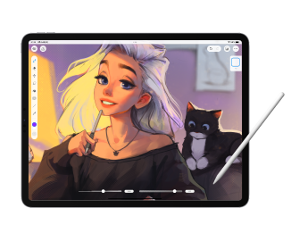
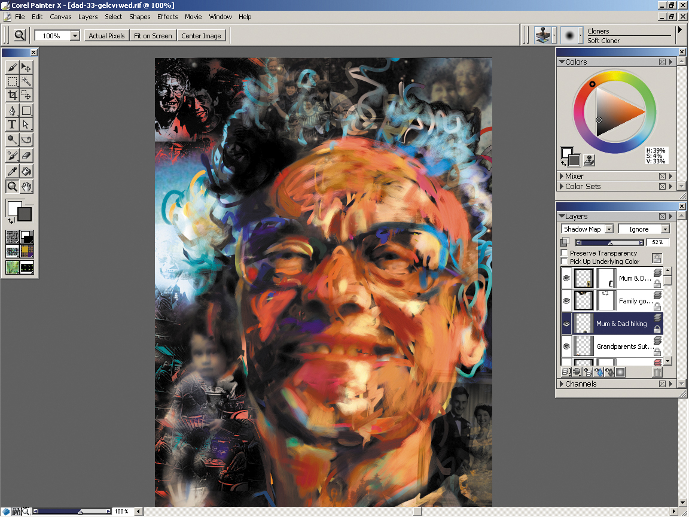
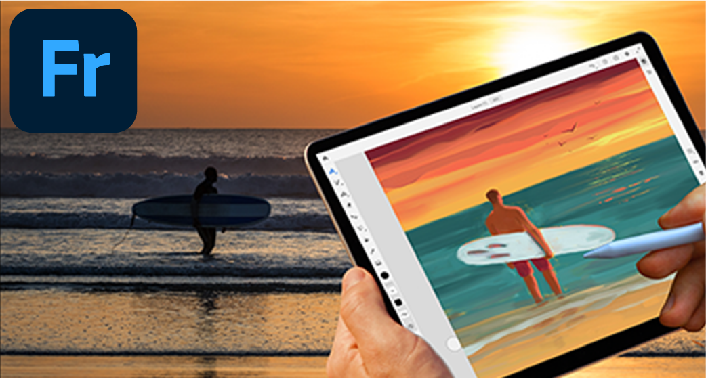
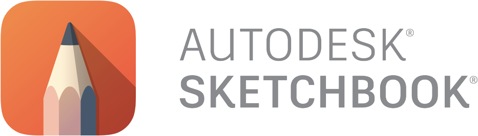

La ilustración digital ha revolucionado el mundo del arte, ofreciendo a los artistas una amplia gama de herramientas y posibilidades creativas. Ya seas un ilustrador profesional o un aficionado, contar con las aplicaciones adecuadas puede marcar la diferencia en tu flujo de trabajo y en la calidad de tus creaciones.

Adobe Photoshop
El gigante de la edición de imágenes, indispensable para la ilustración digital. Ofrece una amplia gama de pinceles, filtros y herramientas de edición. Ideal para ilustraciones detalladas, fotomanipulación y pintura digital.

Adobe Illustraitor
Perfecto para ilustraciones vectoriales, logotipos y diseños escalables. Herramientas precisas para crear formas, líneas y curvas. Ideal para ilustraciones con un estilo gráfico y limpio.
Clip Studio paint
Una alternativa popular a Photoshop, especialmente diseñada para ilustradores y creadores de cómics. Ofrece una amplia gama de pinceles personalizables, herramientas de entintado y sombreado. Ideal para ilustraciones con un estilo de cómic, manga o anime.
Corel Painter
Un software de pintura digital que emula las técnicas de pintura tradicionales. Ofrece una amplia gama de pinceles que imitan los pinceles de óleo, acuarela y otros medios. Ideal para ilustraciones con un estilo pictórico y expresivo. Aplicaciones móviles: Creatividad en movimiento
Procreate
Una potente aplicación de ilustración para iPad. Ofrece una interfaz intuitiva, una amplia gama de pinceles y herramientas de dibujo. Ideal para bocetos, ilustraciones y pintura digital sobre la marcha.
Adobe Fresco
Una aplicación de dibujo y pintura digital que combina pinceles vectoriales y de trama. Ofrece pinceles Live que imitan la pintura al óleo y la acuarela. Ideal para ilustraciones expresivas y creativas.
Autodesk Sketchbook
Una aplicación gratuita con una gran cantidad de herramientas de dibujo. Interfaz muy intuitiva. Ideal para bocetos rápidos.
- La elección de la aplicación adecuada dependerá de tu estilo de ilustración, tus necesidades y tu presupuesto.
- Es recomendable probar diferentes aplicaciones para encontrar la que mejor se adapte a tu flujo de trabajo.
- No dudes en buscar tutoriales y recursos en línea para aprender a utilizar las diferentes aplicaciones.